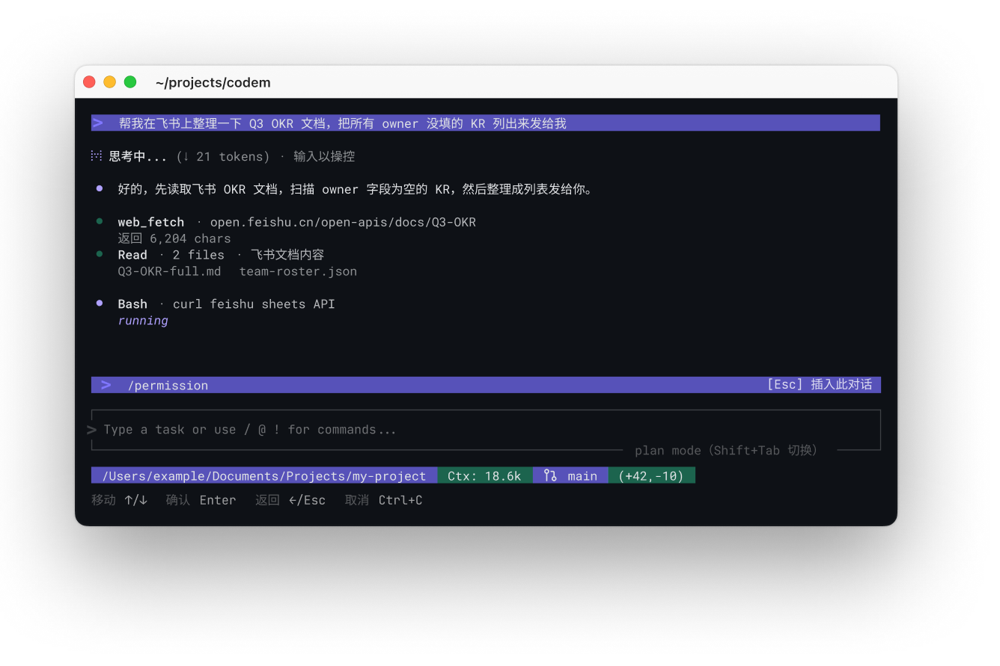
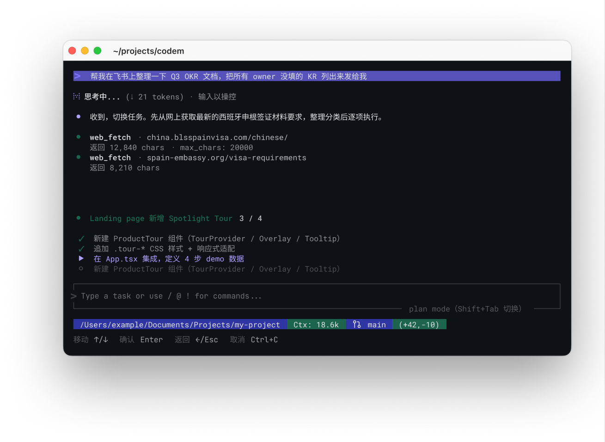
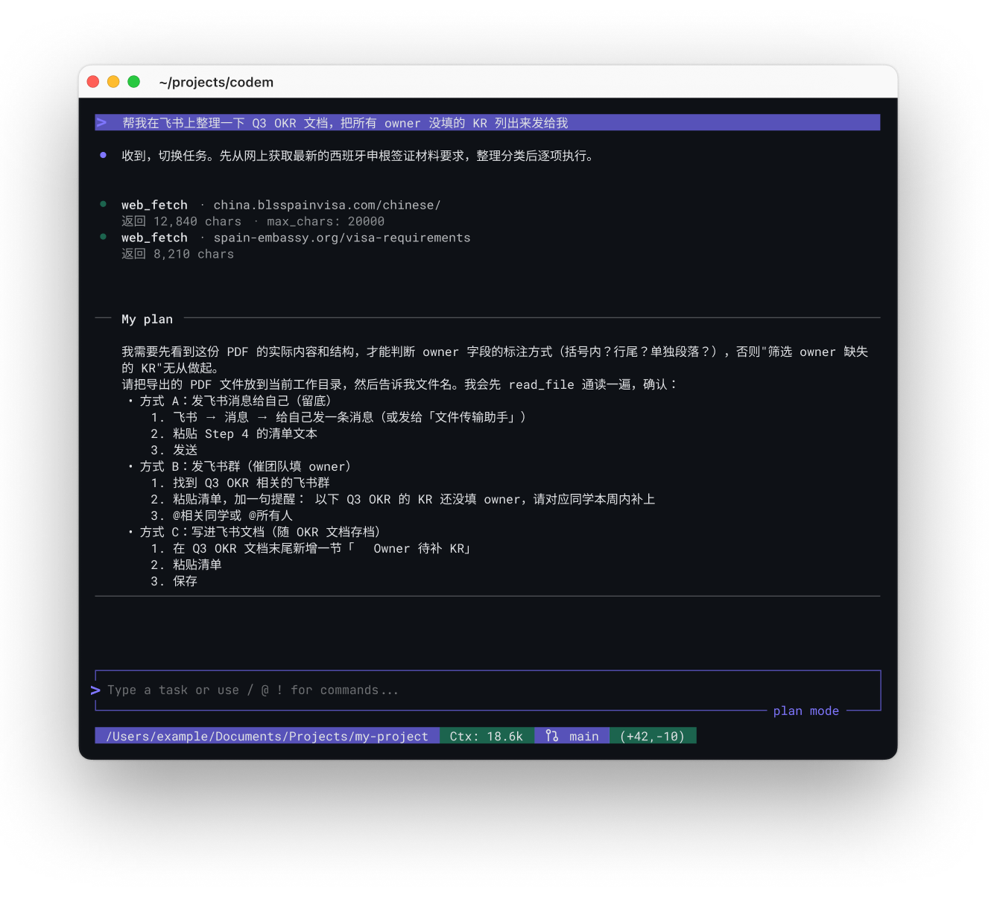
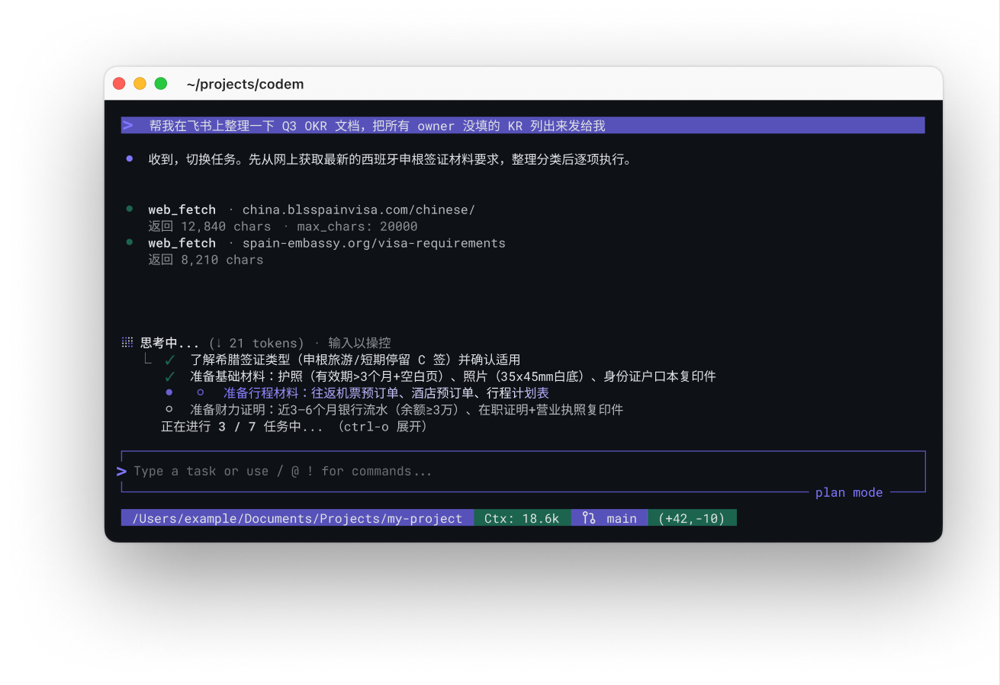
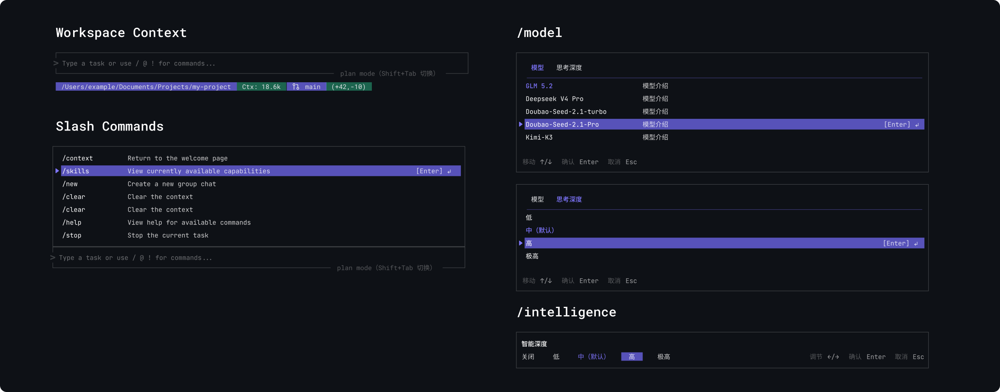
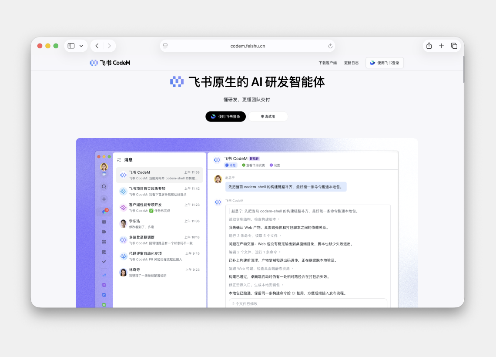
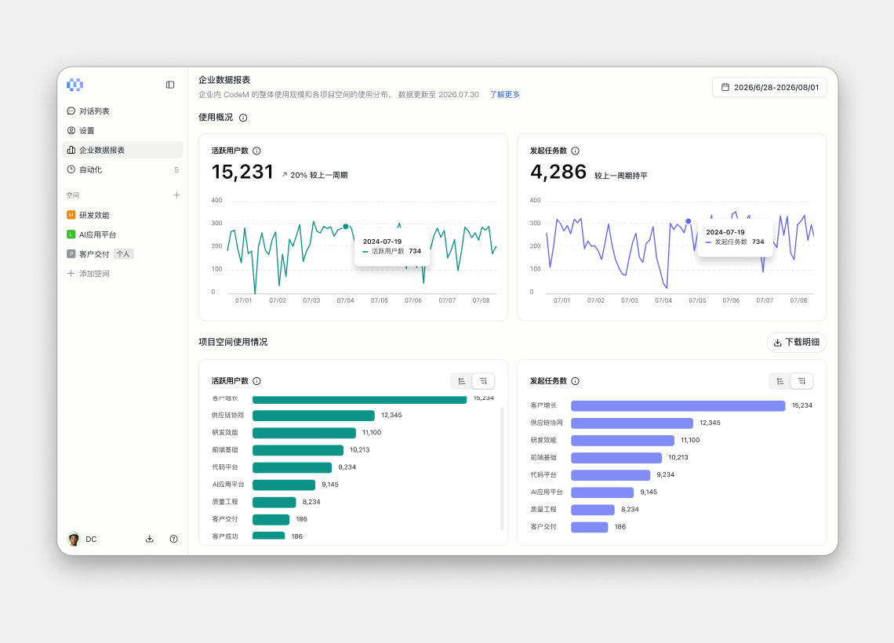

CodeM
CodeM brought AI coding into the team's existing workflow
Live WebsiteContext
Individual speed does not equal team speed.
Coding agents can help one developer move faster, but often start without the decisions behind a task. CodeM extends Meego’s project workflow into coding, so the team can share context and follow progress.
Solution
One agent. Three ways to work.


CodeM CLI
CodeM's broader challenge was to help the whole team move faster. For developers, that meant carrying a requirement received in Lark into the CLI without losing its context.
I led the CLI design from 0 to 1, shaping how the agent makes context, progress, and control visible in the terminal.

Intervene

Progress list

Plan mode


More features

Beyond the CLI
I also designed the CodeM landing page and Web Session features in the admin console.

